| 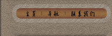 | 起源：书法是汉字的书写艺术。汉字在漫长的演变发展的历史长河中，一方面起着思想交流、文化继承等重要的社会作用，另一方面它本身又形成了一种独特的造型艺术。它不仅是中华民族的文化瑰宝，而且在世界文化艺术宝库中独放异采。 近代经过考证，关于中国文字起源，一般认为在中国黄河中游的“仰韶文化时期”，已经创造了文字，距今约5000、6000年左右。仰韶文化因1921年首先在河南绳汕仰韶村发现，故名。近40余年，又陆续有许多发现。1954年在西安半坡仰韶遗址，又出土了很多陶器，其口缘外往往刻有不同的符号。1959年，在山东大汶口地区也发现了仰韶文化的文字符号。 经考征，这些符号即是简单的文字，有的已经释出。至于大汶口陶器文字图的文字则是意符“热”字，已是合体图画的会意字。太阳烤得下面起了火，就是热。有人认为这些符号就是“结绳而治”以后的“书契”。 世界上各民族的文字，概括起来有三大类型，即表形文字（图画文字）；表意文字，（字体表示语言中的词或词素）；表音文字（拼音文字）。汉字则是典型的在表形文字基础上发展起来的表意文字。 象形的造字方法即是把实物画出来。不过画图更趋于简单化、抽象化，成为突出实物特点的一种符号，代表一定的意义，有一定的读音…… 我们的汉字，从图画、符号到创造、定型，由古文大篆到小篆，由篆而隶、楷、行、草，各种形体逐渐形成。在书写应用汉字的过程中，逐渐产生了世界各民族文字中独一的、可以独立门类的书法艺术。下面，我们按照年代顺序来介绍中国书法发展的历史…… |
||||
| 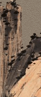 | 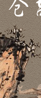 | ||||
| 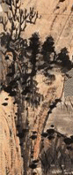 | 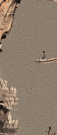 | 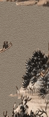 | 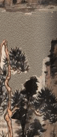 | 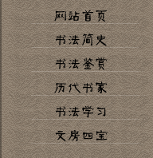 | |
| 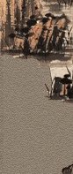 | 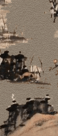 | 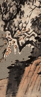 |  |
||